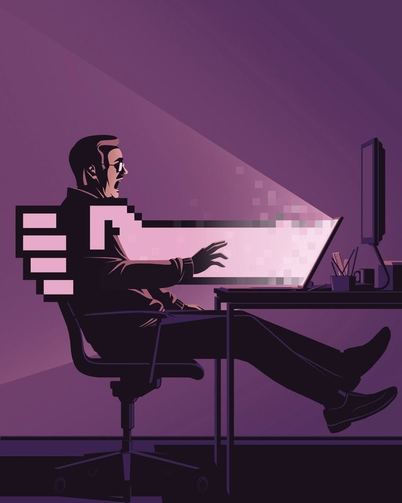

Postura · Automatización
Y es la primera que conviene automatizar.
Alguien las hace cada semana. Ninguna es la razón por la que esa persona está en el equipo.
A veces es donde alguien aprende cómo funciona el negocio. Esa se entiende primero y se automatiza después.
Antes
Después
Esquema ilustrativo, sin cifras.
Si nadie decide en qué se usa, se llena con más tareas que nadie eligió.
Plogy trabaja con la segunda.
